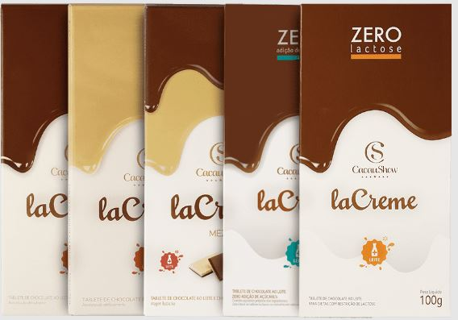

| INFORMAÇÃO NUTRICIONAL | |||
|---|---|---|---|
| Porção por embalagem: 4 | |||
| Porção 25g (3 quadrados) | |||
| 100g | 25g | %VD* | |
| Valor energético (kcal) | 589 | 148 | 7 |
| Carboidratos (g) | 52 | 13 | 4 |
| Açúcares totais (g) | 51 | 13 | 0 |
| Açúcares adicionados (g) | 40 | 10 | 20 |
| Proteínas (g) | 7,4 | 1,9 | 4 |
| Gorduras totais (g) | 39 | 9,8 | 15 |
| Gorduras saturadas (g) | 24 | 6 | 30 |
| Gorduras trans (g) | 0 | 0 | 0 |
| Fibras alimentares (g) | 0 | 0 | 0 |
| Sódio (mg) | 117 | 29 | 1 |
| *Percentual de valores diários fornecidos pela porção. | |||
|
 |
|||